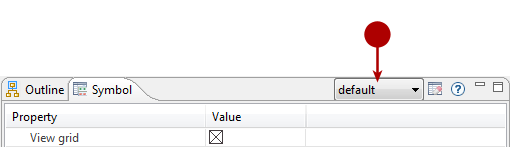

Setting graphic options for diagrams¶
General presentation¶
Diagrams graphic options are displayed in the Symbol view as shown in the screenshot below:
The Symbol view on a class
Detailed presentation¶
A close up screenshot of the Symbol view
Key:
- The Symbol view tab
- The diagram types dropdown list
- The “Cancel the local changes” button
- The “Show/hide the property description area” button
- The graphic properties of the selected element
Properties description¶
The Symbol view is a powerful tool that lets you change numerous graphic properties for your diagram elements.
To get a description of each property, activate the “Show/hide the property description area” as shown in the screenshot below:
Activating the “Show/hide the property description area”
Steps:
- Click on the “Show/hide the property description area” button.
- The Description area is displayed, showing the description of the selected property.
Modifying graphic properties¶
When diagrams are created, they use a default style. The same style is used by all the elements created in the diagram.
The style used is shown in the Symbol view toolbar:

The diagram styles dropdown list showing the style used
The graphic properties of the diagram elements can be changed locally in the Symbol view. Locally modified graphic properties are displayed in bold. In this way, they can be quickly spotted.
Examples of graphic properties modifications:
Changing the representation mode of a class
The different representation modes of a class

Modifying the fill color property of a class
Steps:
- Change the class fill color.
- The class fill color change is applied in the diagram.
- The fill color property now appears in bold to indicate it was locally changed.
Local changes can be cancelled by clicking on the “Cancel the local changes” button in the Symbol view toolbar :
Cancelling local changes
Steps:
- Click on the “Cancel the local changes” button.
- The fill color is back to default style.
- The fill color property is no longer in bold.
Creating your own diagram style¶
Modelio lets you create your own diagram style.
To create your own diagram style, simply carry out the steps shown in the Diagrams styles -TBD section